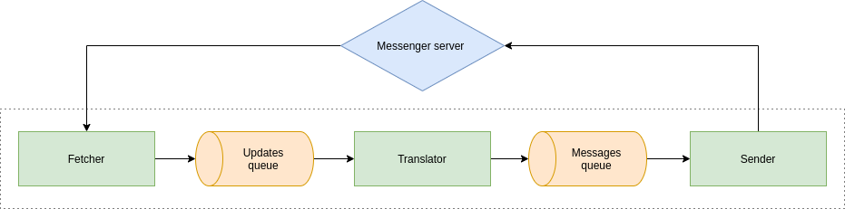

This repository contains simple polymorphic echo bot for VK and Telegram.
This application build on top of req to proceed request to messengers servers and uses Tagless Final approach to abstract business logic over concrete implementation.
NOTE: The application was created for education purpose.
This project relies on the Haskell Stack tool.
This applications uses external config file called bot.config to set up its behavour.
The sample config is placed into root directory of this repository.
NOTE: The log_level can be either debug, info, warning or error.
Delays are specified in miliseconds.
To build this project simply run
sh
stack build
This will install all dependencies, including a proper version of GHC.
This project has one executable that you can run with
sh
stack exec echo-bot-exe
Tests of this project relies on Tasty framework with HUnit and Hedgehog addons for unit tests and property-based ones.
To run tests simply run
sh
stack test
The main logic of whole application is placed into src folder (default for stack).
Here you can examine file structure of this folder:
sh
.
├── Bot
│ ├── Shared
│ │ └── RepeatCommandHandler.hs
│ ├── Shared.hs
│ ├── Telegram
│ │ ├── Fetcher.hs
│ │ ├── Sender.hs
│ │ ├── Translator.hs
│ │ └── Types
│ │ ├── Config.hs
│ │ ├── Msg.hs
│ │ ├── Shared.hs
│ │ └── Updates.hs
│ ├── Telegram.hs
│ ├── VK
│ │ ├── Fetcher
│ │ │ └── LongPollServer.hs
│ │ ├── Fetcher.hs
│ │ ├── Sender
│ │ │ ├── Keyboard.hs
│ │ │ └── Keyboard.json
│ │ ├── Sender.hs
│ │ ├── Translator.hs
│ │ └── Types
│ │ ├── Config.hs
│ │ ├── Msg.hs
│ │ ├── Shared.hs
│ │ └── Updates.hs
│ └── VK.hs
├── Bot.hs
├── Config.hs
├── Helpers.hs
├── Logger.hs
└── Logic.hs
All business logic is placed into Logic.hs file. Business logic are expressed in
tagless final style. It separated into three parts:
Here you can see diagram of business logic structure:

An advantages of this separted business logic into different small parts is ability
to run each of them in separate thread (their connection is provided via STM Queue).
This architecture provides an ability of not linear system scaling:
The main set of type classes and and their default implementation is placed into Bot.hs file.
The main logic for config reading is placed into Config.hs file.
Files called Bot/Telegram/Types/Config.hs and Bot/VK/Types/Config.hs
contains parsing functions for these concrete config parts.
The logger logic and data types are placed into Logger.hs file.
Logger also uses typeclass approach to provide its functionality.
There are to default loggers implementation STD logger
(which prints log messages into console) and Identity one
(which mocks all log messages).